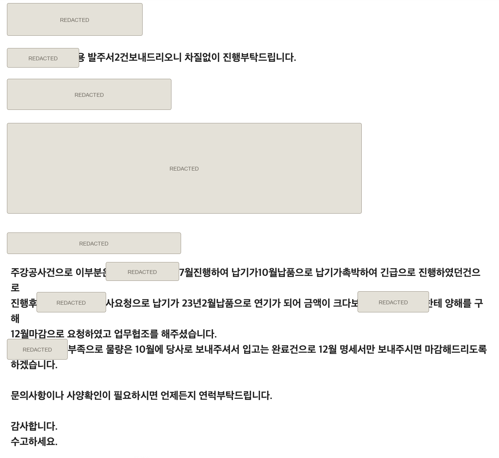
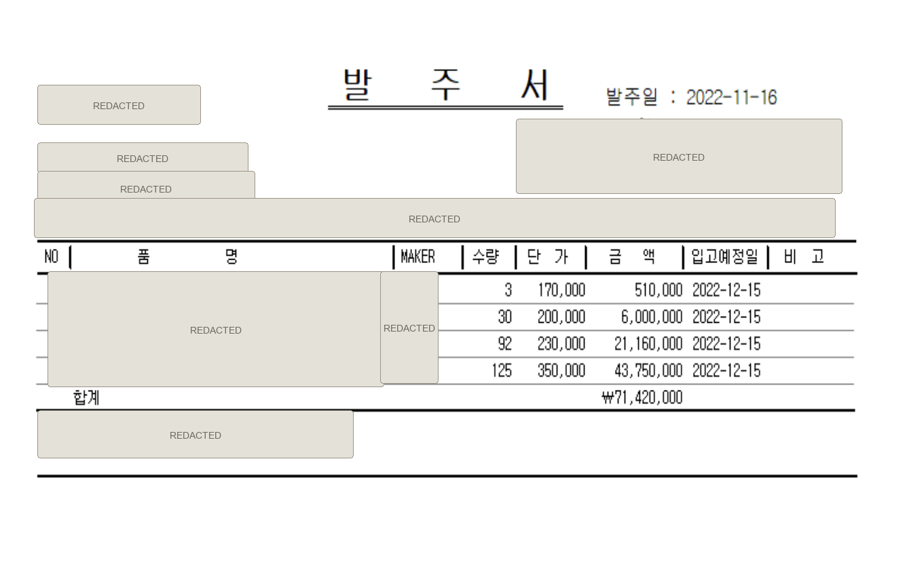
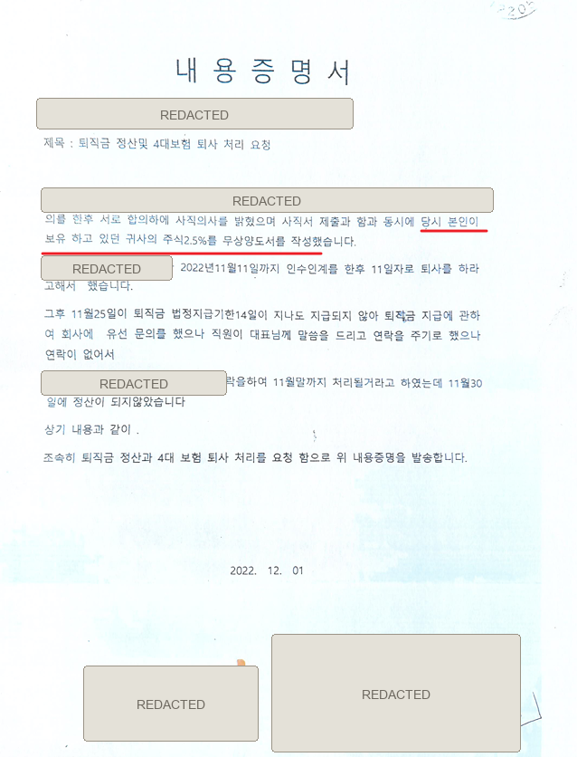

업무수행이 아니라 종속적 지휘·감독이 증명되어야 합니다.
원고들은 회사 업무를 수행한 자료를 많이 냈지만 대표가 근태·업무방법·가격·생산을 구체적으로 통제했다는 직접증거는 제한적입니다. 반대로 양평의 거래·견적·단가·기술·연구·근태 자율성을 보여주는 자료가 존재합니다.
현재까지 확인된 원고 준비서면 159쪽, 내용증명, 외부 거래처 이메일·발주서와 회사 운영사실을 근로자성 판단요소에 맞춰 재구성했습니다.
이번 항소심의 주된 방어축과 증거 우선순위입니다.
원고들은 회사 업무를 수행한 자료를 많이 냈지만 대표가 근태·업무방법·가격·생산을 구체적으로 통제했다는 직접증거는 제한적입니다. 반대로 양평의 거래·견적·단가·기술·연구·근태 자율성을 보여주는 자료가 존재합니다.
외부 거래처가 고액 거래의 12월 마감을 원고 A에게 양해받았다고 당시 메일에 기재
일반 직원은 수당정산 때문에 의무 기록, 두 원고는 장기간 미작성
법인전환 때부터 2014년까지 등기임원이었다는 진술—등기부 확인 필요
원고 서면 스스로, 항소심 재판부가 망 대표로부터 업무지시를 받은 증거를 확인·제출하라고 요청했다고 기재했습니다.
그 후 원고들에게 입증을 명하고 서면을 받았다면, 적어도 근로자성 쟁점을 심리대상으로 보고 있는 정황입니다. 결과를 예단할 수는 없습니다.
판사는 “왜 이제 주장하느냐”고 신빙성을 문제 삼았습니다. 전 변호사 탓만 하기보다 누락 경위·즉시 보완·심리지연 부재를 객관화해야 합니다.
늦은 항변을 숨기지 말고, 절차상 허용성과 객관자료의 존재를 설명합니다.
당시 소송대응은 횡령·부정경쟁·영업비밀 문제에 집중됐고, 퇴직금 청구의 선결문제인 근로자성 부인에 관한 안내와 자료정리가 충분하지 않았습니다.
법인등기, 근태기록, 당시 거래메일, 발주서, 업무권한은 모두 재직 당시부터 존재했습니다. 1심 판결 검토 후 이 자료의 근로자성상 의미를 재평가해 즉시 보완한 것으로 설명합니다.
문서확인과 사용자 진술·입증 필요를 구분했습니다.
두 원고가 법인전환 때부터 등기임원으로 재직했다는 진술. 법인등기부로 정확한 취임일·직위·퇴임일 확인 필요.
망 대표가 두 사람을 등기임원에서 제외했지만 실제 양평의 업무·권한·근태방식은 계속됐다는 진술. 전후 계약·급여·업무변경 유무 확인.
가격정보 노출 방지, 거래처 가공 문제 전달, 일회성 품질조치. 원고들은 대표의 지시 증거라고 주장.
두 원고가 가입자로 표시. 피고에게 불리한 형식적 징표이나 실질적 권한·근태와 함께 종합할 요소.
일반 직원용 취업규칙. 원고들은 적용을 주장하나 실제 연차·근태·징계·연장근로 적용자료는 별도 확인 필요.
외부 거래처 이메일에 따르면 납기변경과 공간부족으로 물량을 10월 선입고하고, 고액이어서 원고 A에게 양해를 구해 12월 마감하기로 협의.
원고 B가 대표 측과 “서로 합의하에” 사직했고, 같은 시점 본인이 보유했다고 표현한 주식 2.5% 무상양도서를 작성했다고 기재.
인수인계 후 11일자로 퇴사했다는 원고 B의 기재.
250개, 합계 71,420,000원, 입고예정일 2022년 12월 15일로 적힌 발주서. 선입고 건이라는 비고.
퇴직금 정산과 4대보험 처리를 요구하면서 2.5% 주식 보유·무상양도를 스스로 기재.
근로자성을 충분히 다투지 못하고 위법행위·영업비밀 분쟁에 대응이 집중됐다는 사용자 진술.
재판부가 원고들에게 업무지시 증거 제출을 요구했고, 원고들이 159쪽 준비서면과 첨부자료를 제출.
지분·직함 하나가 아니라 실질적 종속관계를 종합 판단합니다.
업무내용 결정, 취업규칙 적용, 상당한 지휘·감독, 근무시간·장소 구속, 독립위험, 보수 성격, 전속성, 사회보험 등을 종합합니다.
이사·감사 등 임원은 원칙적으로 회사의 사무처리를 위임받습니다. 다만 직함이 명목적이고 대표의 지휘감독 아래 별도 노무를 제공했다면 근로자가 될 수 있습니다.
비등기 전무가 최종의사결정권자에게 경영 전반을 일일이 보고하고 구체적 지시를 받은 사안에서 근로자성을 인정했습니다.
| 판단요소 | 원고에게 유리 | 피고가 입증할 사실 | 현재 평가 |
|---|---|---|---|
| 계약·보수 | 근로계약서, 고정급 주장 | 임원 승진·등기 이후 계약관계와 보수성격 | 원문 필요 |
| 근태 | 고정 사업장·좌석 | 일반 직원만 출퇴근 의무, 원고는 미기록·무징계·무수당 | 강한 쟁점 |
| 업무지시 | 2014년 문자 3건, 통화횟수 | 거래협의와 지시의 구별, 상시적 통제 부재 | 반박 가능 |
| 가격·거래 | 안산 실무자의 이메일을 지시라고 주장 | 안산이 양평 승인을 요청했고 양평이 단가를 반려한 사례 | 보강 필요 |
| 경영권한 | 비등기 기간 강조 가능 | 고액 거래 마감·물량·납기·연구소·직원관리 권한 | 제3자 문서 있음 |
| 사회보험 | 4대보험 가입 | 행정상 처리 이유와 실질 근태·권한의 불일치 | 설명 필요 |
“회사 일을 했다”와 “대표의 종속적 지휘감독을 받았다”를 분리합니다.
거래가격 노출 방지, 가공문제 전달, 품질표시 보존. 장기간의 근태·업무방법 통제 증거로 보기에는 단편적입니다.
반박 높음횟수만 있고 내용이 없어 지시·보고·협의 중 무엇인지 특정할 수 없습니다.
반박 높음대표가 아닌 실무자의 견적·도면·생산 문의입니다. “대표가 지시했을 것”이라는 연결은 추정이며, 양평 승인요청으로도 해석됩니다.
핵심 전환설비현황·가격인상안·거래처 메일 공유는 임원의 보고·통보와도 양립합니다. 누가 초안을 정하고 누가 반려했는지가 핵심입니다.
사실보강외부 컨설팅, 세제혜택, 연구보고서·조사표 제출을 직접 관리한 정황으로 경영관리 권한을 뒷받침할 수도 있습니다.
전환 가능제조공장을 상근 관리하는 임원에게도 자연스러운 중립적 자료입니다.
중립개인명·직급·전결권·결재선이 없는 기능도로 실질 보고체계를 증명하기 어렵습니다.
중립피고에게 가장 불리합니다. 다만 임원 전환 이후 효력과 실제 연차·근태·징계 적용 여부를 따져야 합니다.
위험 높음고려요소이나 단독 결론은 아닙니다. 회사가 장기간 가입자로 처리한 이유를 설명해야 합니다.
설명 필요구두 설명을 법원이 채택할 수 있는 객관자료와 구체적 진술로 바꿉니다.
2007년 법인전환부터 2014년까지 두 원고가 등기임원이었다는 사실. 법인등기부, 취임·퇴임 의사록, 당시 보수자료를 확보합니다.
2014년 등기 제외 후에도 양평 견적·단가·생산·기술·연구·직원관리 권한이 바뀌지 않았다는 점을 전후 이메일·계약·보수로 입증합니다.
일반 근로자는 야근·연장수당 산정을 위해 의무적으로 기록했으나 두 원고는 단 한 번도 기록하지 않았고, 미기록으로 징계·공제받지 않았다는 사실.
가격반려, 견적승인, 생산·납기, 직원 업무배치·휴가에 관한 직접 경험을 가진 전 직원·거래처의 구체적 진술이 필요합니다.
원고 A가 대표의 “이사를 먼저 거치자”는 제안을 따르지 않고 상무 직급을 정해 통보했다는 구두사실. 명함발주·메일서명·급여대장·증인으로 시점과 경위를 객관화합니다.
실질 출자자가 따로 있었다는 진술이므로 “실질주주라 근로자가 아니다”라고 단정하지 않습니다. 내용증명상 본인이 보유·무상양도했다고 기재한 자기표현과 퇴사·지분정리의 결합관계로 제한합니다.
사용자 진술상 약 6억 원을 넘는 횡령 의혹은 근로자성 자체를 결정하지 않습니다. 확정된 계좌·자백·포렌식만 활용해 광범위한 자금접근·처리권한을 보여주는 보조사실로 제한합니다.
퇴사 후 연구자료 제출은 유출 자백이 아닙니다. 취득시기·보관매체·반환 여부를 석명하고, 별도 영업비밀 사건과 증거를 혼합하지 않습니다.
원고 퇴사 직후 제3자가 보낸 당시 문서로, 원고 A의 거래·매출관리 권한을 뒷받침합니다.


| 구분 | 수량 | 단가 | 금액 | 입고예정일 |
|---|---|---|---|---|
| 품목 1 | 3 | 170,000원 | 510,000원 | 2022. 12. 15. |
| 품목 2 | 30 | 200,000원 | 6,000,000원 | 2022. 12. 15. |
| 품목 3 | 92 | 230,000원 | 21,160,000원 | 2022. 12. 15. |
| 품목 4 | 125 | 350,000원 | 43,750,000원 | 2022. 12. 15. |
| 합계 | 250 | — | 71,420,000원 | — |
피고가 소송용으로 사후 작성한 문서가 아니라 실제 업무처리를 위해 거래처가 당시 작성한 이메일과 발주서입니다.
거래처가 고액 거래의 납기·매출마감 양해를 대표가 아닌 원고 A에게 구한 사실은 양평의 실질 책임자 지위를 뒷받침합니다.
고위 직원도 일정 권한을 가질 수 있습니다. 대표 사전승인 부재, 회계처리·입금·출고 흐름, 거래처 증언을 함께 붙여야 합니다.
실질주주 단정이 아니라, 퇴사와 지분정리가 결합된 특수관계의 자기표현으로 사용합니다.

원고 스스로 사직과 2.5% 주식 무상양도를 같은 시점에 처리했다고 적었습니다. 단순 직원 퇴사 외에 주식명의와 회사관계를 함께 정리한 정황입니다.
같은 문서는 퇴직금과 4대보험 처리를 요청하고 인수인계 종료일을 대표가 정했다고 적습니다. 문서 전체의 불리한 부분도 인정한 뒤 다른 실질자료와 결합해야 합니다.
증거번호와 실제 날짜는 담당 변호사가 기록에 맞춰 교정해야 합니다.
스크린샷보다 원본성과 작성경위를 입증하는 자료가 우선입니다.
“큰어른이었다” 같은 평가보다 직접 경험한 구체적 사건을 묻습니다.
강한 표현보다 입증 가능한 문구가 유리합니다.
| 피해야 할 주장 | 권장 주장 | 이유 |
|---|---|---|
| “1심 변호사 때문에 전혀 못 했다” | 1심 대응초점·누락발견·즉시보완·심리지연 부재를 객관적으로 설명 | 소송대리인 탓만으로 정당한 사유가 자동 인정되지는 않음 |
| “2심에서 처음 알았다” | 2022년 거래메일을 받았으나 당시 거래·손해 문제로 인식했고 근로자성상 의미를 뒤늦게 구조화 | 문서 수신일과 모순 방지 |
| “2.5% 주주라 근로자가 아니다” | 본인의 보유·무상양도 자기기재와 퇴사·지분정리 결합관계로 제한 | 명의상 보유라면 경제적 위험·주주권 주장이 약해짐 |
| “6억 횡령했으니 근로자가 아니다” | 확정자료로 광범위한 자금 접근·처리권한만 보조 입증 | 근로자도 범죄를 저지를 수 있어 직접 법리가 아님 |
| “연구자료 제출은 유출 자백” | 취득·보관·반환 경위에 대한 석명 요구 | 개인 이메일 사본 보관 가능성 |
| “양평을 100% 관리했다” | 가격·인사·생산·거래·연구 권한을 사건별 증거로 제시 | 추상평가보다 구체적 결정사례가 강함 |
문서 원문과 사용자 진술을 혼동하지 않도록 기록합니다.